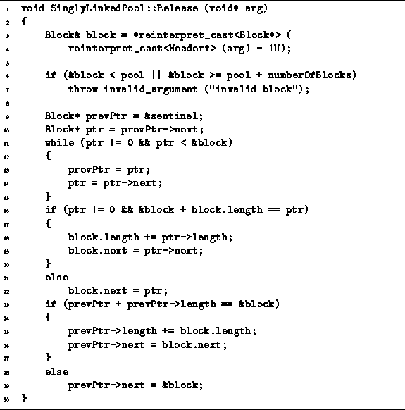
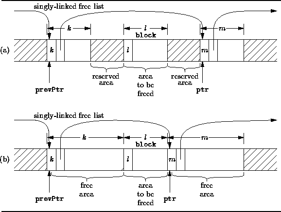

Data Structures and Algorithms
with Object-Oriented Design Patterns in C++
Data Structures and Algorithms
with Object-Oriented Design Patterns in C++It seems that releasing an area to the free list should be quite simple and fast. E.g., to release an area we might simply insert it at the head of the free list. This could be done in constant time.
However, there is a problem with this: The Acquire function occasionally splits free areas. And if we never coalesce adjacent free areas, the free list will eventually contain a large number of small areas that are each individually too small to satisfy a given request, even though there is sufficient contiguous memory available.
Therefore, the Release function needs to check when an area is freed whether the adjacent areas are already free. However, the problem is this: How do we know where the adjacent areas are? The solution we have adopted is to keep the list of free areas sorted by the starting addresses of the areas.
This means that in order to free an area, it must be inserted in the appropriate place in the linked list. And at the point where the appropriate place to do the insertion has been determined, we can check to see if the area to be freed needs to be merged with an adjacent free area.
Program  gives the code for the Release function
of the SinglyLinkedPool class.
This function takes as its lone argument the address of the userPart
of an area that was previously obtained from the Acquire function.
The Release function begins by determining the block which corresponds
to the given area and checking that this block is indeed a part
of the memory pool (lines 3-7).
gives the code for the Release function
of the SinglyLinkedPool class.
This function takes as its lone argument the address of the userPart
of an area that was previously obtained from the Acquire function.
The Release function begins by determining the block which corresponds
to the given area and checking that this block is indeed a part
of the memory pool (lines 3-7).

Program: SinglyLinkedPool Class Release Member Function Definition
The loop on lines 9-15 traverses the linked list of free areas
and when it terminates, the following is true:
The pointer prevPtr either points to the sentinel
or it points at a free area the address of which is less than that of
the area to be released.
The pointer ptr is either zero or its points to a free area
the address of which is greater than that of the area to be released.
And prevPtr and ptr always point to adjacent elements
of the linked list.
Figure illustrates this situation.

Figure: Using a Singly-Linked, Sorted Free List
The area immediately preceding the area to be freed
can itself be either reserved or free.
Similarly, the area immediately following the area to be freed
may be reserved or free.
Figure shows two of the four possible situations that can arise.
Specifically, in Figure (a) both adjacent areas are reserved
and in Figure (b) both adjacent areas are free.
If the area to be freed immediately precedes a free area, the two areas are combined (lines 16-20). Otherwise, the area is inserted into the free list in front of the area point to by ptr (line 22).
Similarly, if the area to be freed is immediately follows a free area, the two areas are combined (lines 23-27). Otherwise, the are is inserted into the free list following the area pointed to by prevPtr (line 29).
Unfortunately, since the free list is kept sorted, the running time of the Release function is determined by the number of iterations required to find the position in the list at which to do the insertion. In the worst case, this is O(n) where n is the number blocks in the storage pool. In practice, the free list is significantly shorter than n, and the running time varies accordingly.
The combination of keeping the free list sorted by address and the first-fit allocation strategy sometimes leads to a degradation in the performance because the smaller free areas tend to appear near the head of the free list whereas the larger areas are found near the tail of the free list. This is because storage is always allocated in the first area that is large enough and if that area is too large, it is split in two and the left-over area is inserted into the free list. Eventually, many of the areas near the head of the free list are too small to satisfy most requests. Nevertheless, it is necessary to visit those areas every time the free list is traversed.
The use of a minimum block size alleviates partially this bias. I.e., the minimum block size sets the lower bound beyond which areas are not split. For example, in the implementation given the block size is 16 bytes. As a result, any request for storage up to 12 bytes can be satisfied in constant time because the first area in the free list is guaranteed be at least one block in length.
 Copyright © 1997 by Bruno R. Preiss, P.Eng. All rights reserved.
Copyright © 1997 by Bruno R. Preiss, P.Eng. All rights reserved.